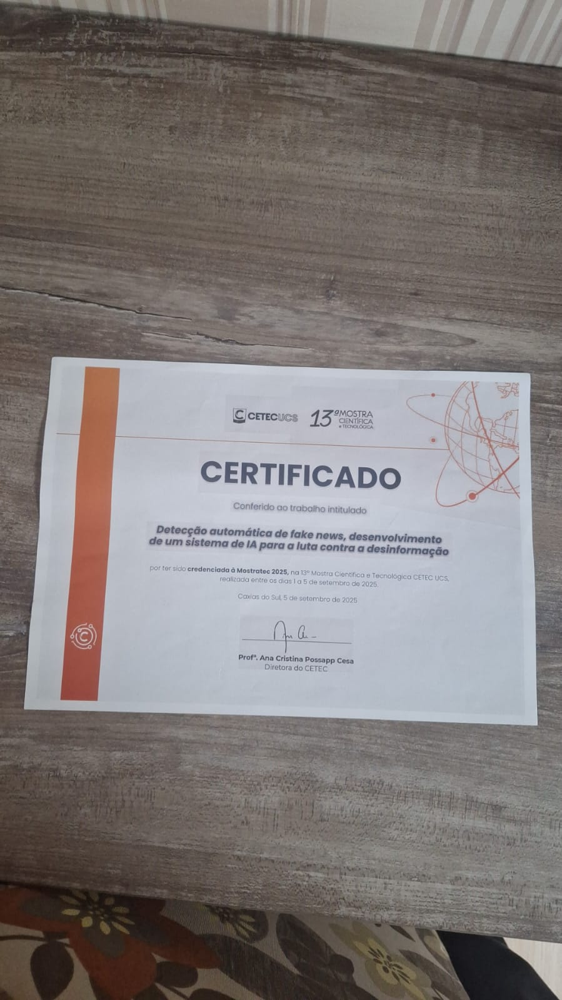
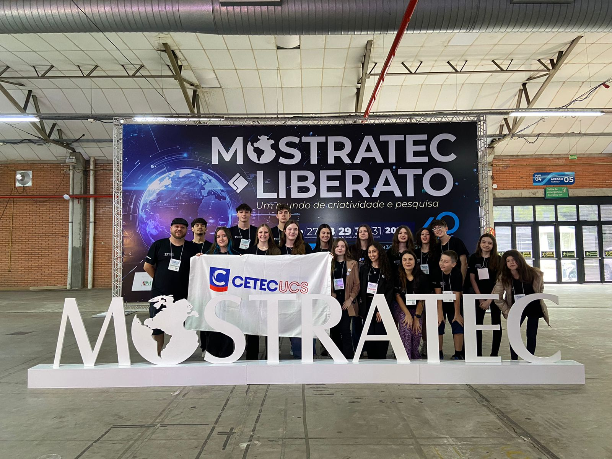
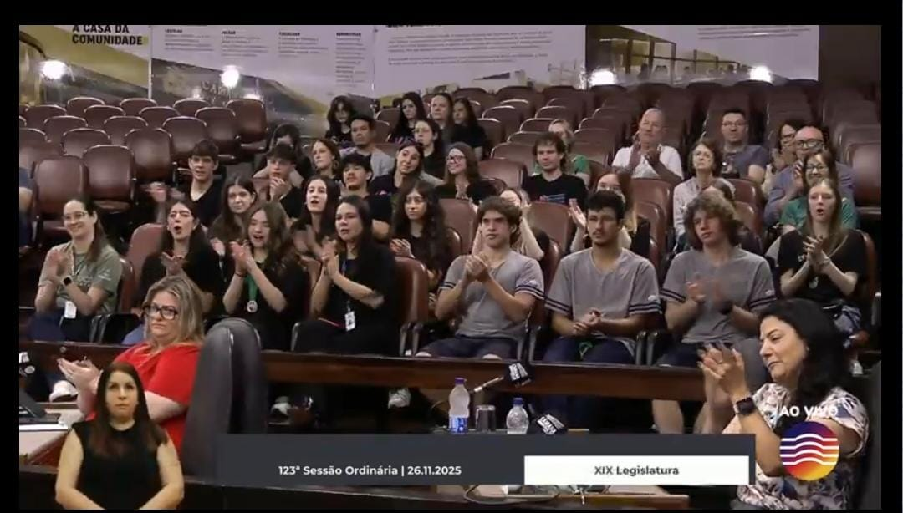
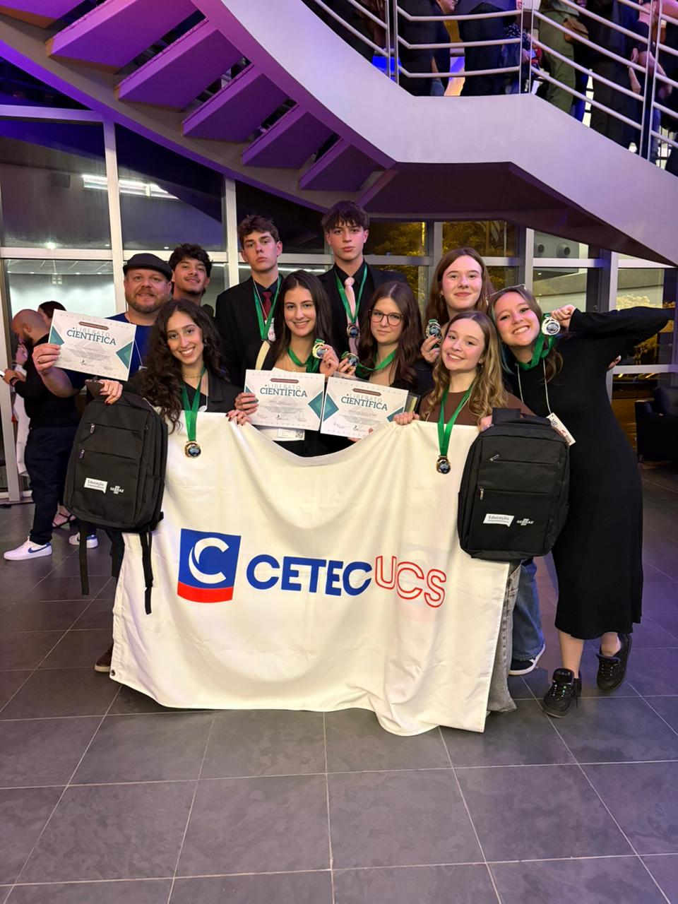
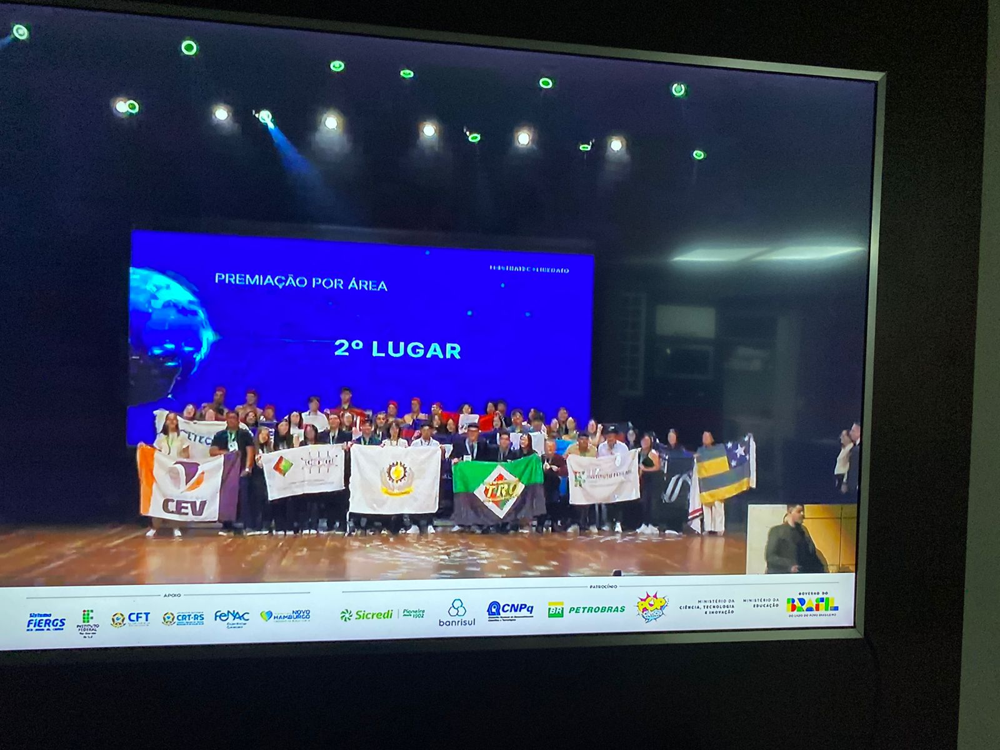
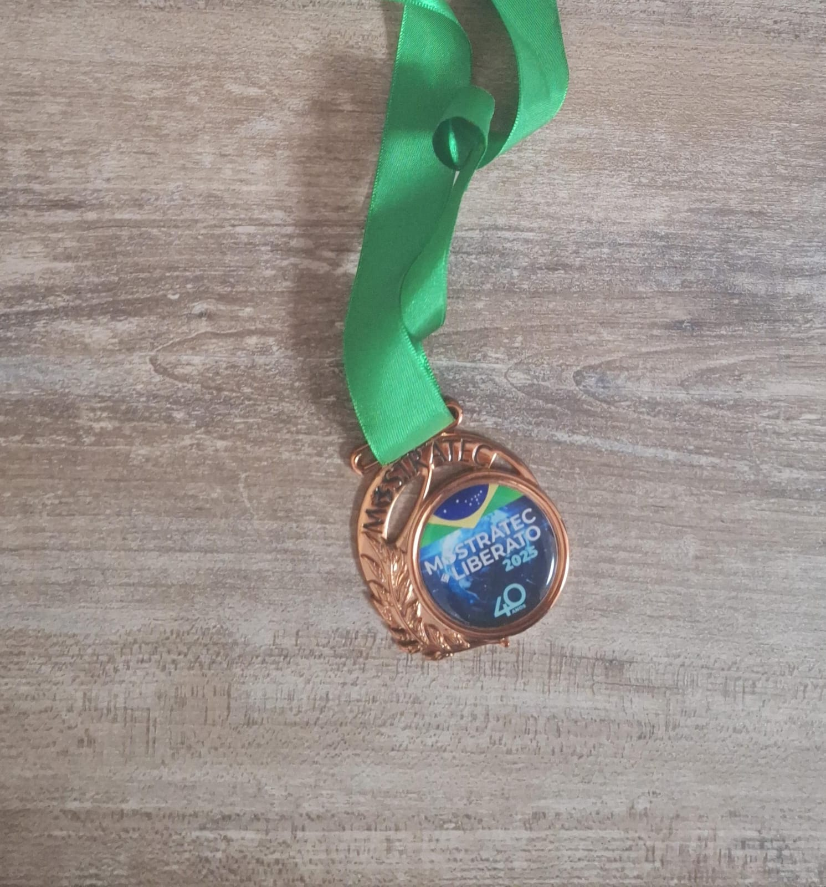
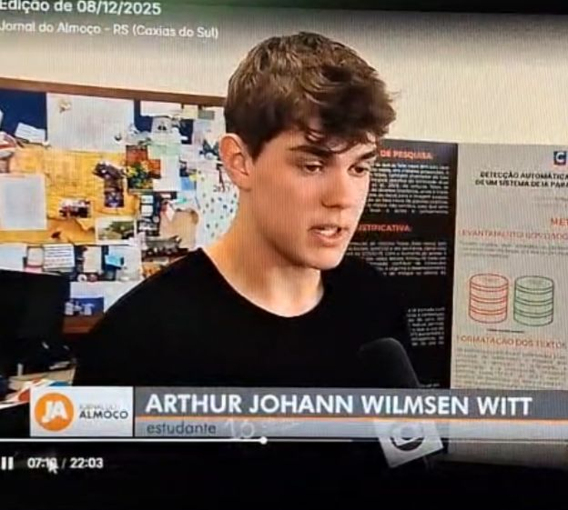

01
Participation Certificate
Official participation certificate awarded during the 2025 Scientific Fair.
Achievements
A visual timeline of my journey through artificial intelligence, cybersecurity, scientific research and public presentations.

FNDetector was an artificial intelligence project focused on fake news detection and text classification. The project was presented during the 2025 Scientific Fair and received recognition from the local community and public institutions.

Scientific Fair 2025

Official participation certificate awarded during the 2025 Scientific Fair.

The project and team were formally congratulated at the City Council for their contribution to science and education.

Presentation day alongside other participating projects, students and award recipients.

FNDetector team during the official award ceremony on stage.

Medal received during the Scientific Fair event as part of the project recognition.

FNDetector appeared in local news coverage during the event, showing the project presentation and its educational impact.
Timeline
Artificial intelligence project for fake news detection, presented at the 2025 Scientific Fair.
The FNDetector project and team received public congratulations and appeared in local news coverage.
Ongoing research project focused on artificial intelligence for digital scam detection and social impact.
Planned participation with GUARDIAN AI as a science fair and research project.
Planned participation with a research project focused on artificial intelligence and digital protection.
Current Projects

Offensive security platform focused on reconnaissance, automation and vulnerability validation.

Evidence correlation architecture designed to reduce false positives in vulnerability scanners.

Artificial intelligence system for identifying digital scams in messages, links and online content.